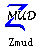

The Virtual Society in the Internet A few yeas before, the people only can contact with a few other people near them. And if somebody have friends or relatives far a way from him, he should spend a lot time to keep in touch with them. Such as write letters and began to wait the letter in reply. It is very weak. The telephone and telegram is useful when you have some emergencies, but it only can take very few messages and it will cost you a lot of money if you make a trunk call. Now, you have a new way to do that kind of things: use Internet. I just mean the Internet can shorten the space among the people, it can help us to do something that we didn’t think we can do when there have no Internet. For example, you can call a human to have a talk with you in the Internet. Perhaps you never know that human and he never know you before, and perhaps he is in the North American, you are in Peking. The Internet let you do it very easy. And many people get to know by this way. In fact, the Internet can do much more things than I have just preferred. For example, the world wide wed can help you get anything that you want to know. The News Group have almost every kind of discuss groups and you can ask questions in the group, (you can answer other’s questions too.) and then someone will answer your question. The people who answered you may in India. of course, he also can be a college student in Tsinghua. The FTP(File Translate Protocol) will help you get any kind of software you like. The Archie will help you to find out which FTP have the software that you want to own. ETC. But the most interest things is contact with others by the Internet: contact the people who you have already known or you will never meet each other. The MUD was written by a college professor first some years before, in order to test the activities of people in the virtual world through the Internet. In the MUD, everyone can act a character like the real word, you can get to know a lot of friends, you can go out for a walk you also can feel love and hate. it is so interesting that after then, many people begin to write MUD, and the MUD have more and more player and is more and more like the real word. The first MUD written by Chinese maybe in Taiwan, I think. And it is said that the first Chinese MUD in mainland(大陆) is written by Afei.(Afei is the administrator of Tsinghua BBS). After then, the Chinese MUD site become more and more. And a lot of people love it very much.. Now, most of the Chinese MUD is the武侠type. When you first play it, you can choice the id of yours(What’s id? It just stand for you in that virtual word), after do that, you can name your character and decide either male or female you character is.(certainly, you must define your pass word). Here, I guess your id is pretty, and you name is Rose. Then you will come into that virtual world. When you come here, your age is 14, and you don’t know if you are clever or foolish, you are beautiful or ugly, strong or week. These may change and you can know them when you at age16 if you are girl or when you are at age 18 if you a boy. You can see many message on your screen and you can use several commands in order to have some actions. For example, you can type “look” command to look the place where you are in. You can type “go east” to walk to the east,(if there have a way to east) when you reach a place, the MUD will display some message to describe the place where you in. From the message, you can get to know where here is, what here have and who is in here. And if there have somebody, you can type “say Some Message” to speak. For example, if you type the command “say Hello! I’m glade to meet you!” and I am in the same place as you, then, I will see the message: “Rose said: Hello! I’m glade to meet you!”. If you like to have a talk with me, you can do it very easy by this way. If you want to be a Knight, The MUD also can help you. There have many skills in the MUD, you can learn it and start exercise it in order to improve it. The world is very dangerous, and you must be careful. Someone who are elder than you is loving killing. They always walk from here to there in order to find somebody to kill….. But there also have some people who love to help others. So when you meet some problem, you can ask other for help. Commonly, you can get help very easy. Another interesting thing in the MUD is CHATTING. MUD have many EMOTES.(them is some command and when you type one, it stand for some actions done by you). The chatting command is “chat*”. For example, If you feel angry to somebody and you want to kick him (or her), and his id is “wolf”, you can type the command “chat* kick wolf”. The screen may appear some message like this: “CHAT: Rose kick wolf on his arse, the wolf cry loudly.” And the MUD have a lot of this kind of EMOTE commands, and most of them is easy to understand. Such as “love”, “hit”, “shrug”, “cry”, “sob”, “wink”, ETC. The MUD is like a real word. Everyone in it feel it like a human’s real life. You grow from young to old, from be killed to killed others, you may be very rich, or you may be very poor too. When you grown up, (that means the boy is 20 and the girl is 18) you can get married with others. I think it is the most important things in the virtual word. I have just got married. My wedding was very jollification and I feel as if I was really got married. When you grow too old, you will die. Just because this, because the successful of virtual real word, there have so many people enjoy MUD. It hasn’t the beautiful pictures, and it even hasn’t the simplest music. But it virtual a kind of world, and everyone can find the own place in it. MUD, I love it. But some people who never played mud may not understand the MUD player. Why? Because they didn’t know what the virtual world looks like, they never have the feeling of make friends through the Internet, in that virtual world. Perhaps they will have no feelings forever. But the virtual world through Internet, the MUD, is EXCELENT! ───１９９８年五月份左右
嘿嘿，这是我们班里要出英语班刊时我被逼着写出来的文章……
|